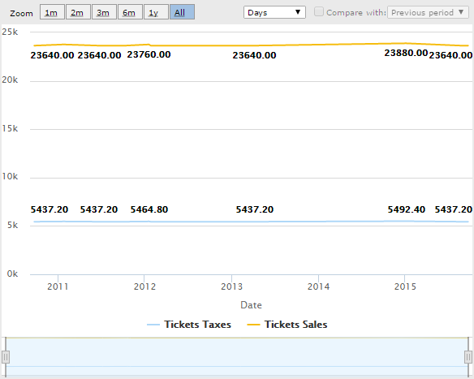
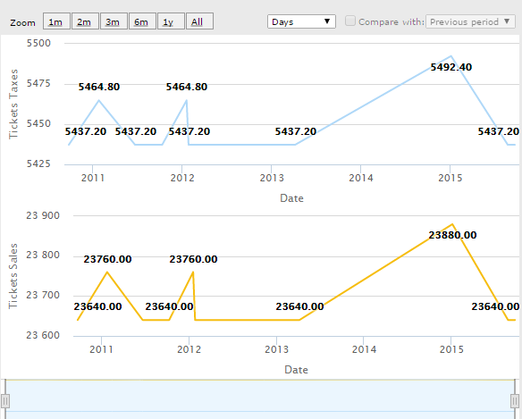

Plot series is a Query object and QueryViewer control property which allows determinating if the different Series of a Query will be shown on the same Chart or in two independent ones (but in the same QueryViewer Control). Values
Description
This property allows better appreciating the variability between the different Series values, this point it's vital when the values of the Query series variates enormously, and the Query have to adapt itself to show all the Series in the same Chart, or when there are too many Series and are shown all together. Using Plot series Property, we can easily change the behavior mentioned before and increase the management of the information. AvailabilityThe property is available if the Output property of the Query object or QueryViewer control value is Chart. It applies for all Chart Types except for those Chart Types which only can stand one, and just one, Serie. This Charts Types are: Circular Charts, Pyramid and Funnel Samples
Let's consider the Tickets Sales and the Tickets Taxes generated by a City Attraction. As you can imagine, the Tickets Sales and Taxes generated by a famous Attraction (as the Eiffel Tower) varies on a very high level over the years. If we want to analyze a determined period, we can display this information on a TimeLine Chart. If the Plot Series Property value is In the same chart, the variation between values along the time it will be almost inappreciable because the two Series values are too different, as shown in the following image:

However, if the property value it's In separate charts, we will be able to have major view and management of the data displayed:

Obs: pay particular attention to the two Series data values, the difference between them it's huge, but they are displayed simply and elegantly, the behavior of the X Axis intersection at Zero Property plays a fundamental part of it. Scope Objects: Query |
| Backlinks |
| QueryViewer control properties |